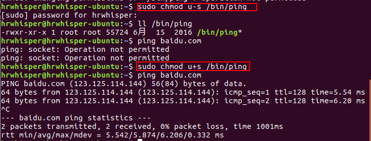
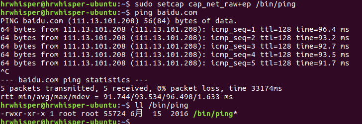
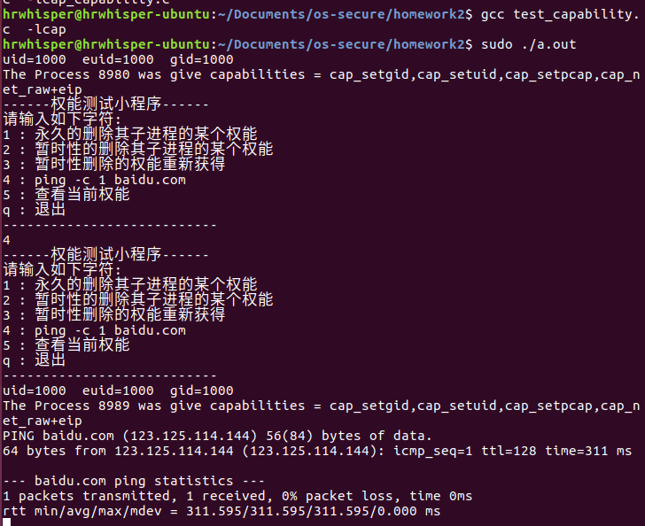
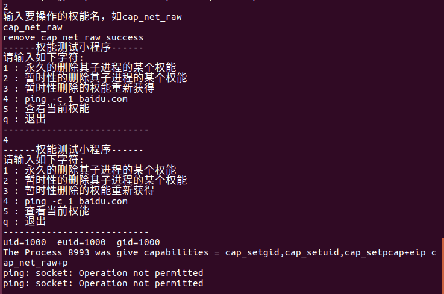
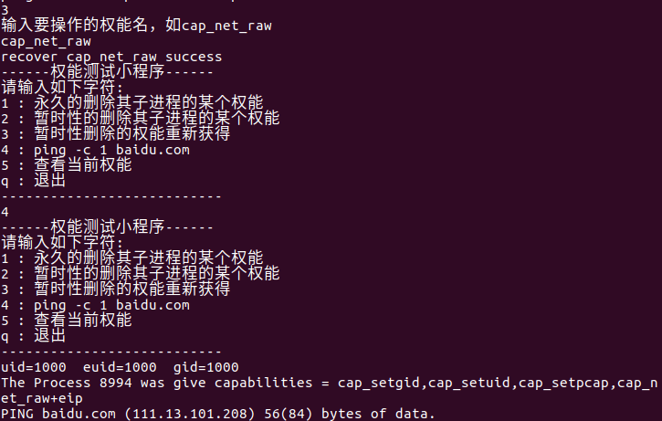
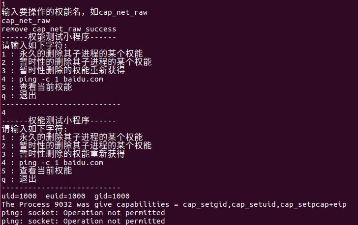

Linux下对于一个文件我们熟悉的权限有rwx，表示读写和执行。
从一个例子开始
ping命令常常用来测试网络是否通畅，我们看看ping的权限是啥：
1 | $ ll /bin/ping |
rws！第三个s是啥东西？将其删掉：
1 | $ sudo chmod u-s /bin/ping |
发现就无法ping了，因为没有打开socket的权限。而当我们又将s位给它的时候，又可以ping了。

Setuid位的作用
Setuid 是让程序在执行过程中拥有文件拥有者的权限。
用passwd命令举例来说，passwd命令也一样设置了setuid位。
为啥这个需要呢？我们知道linux中账号与密码分别存放在 /etc/passwd与 /etc/shadow，而后者的权限如下：
1 | $ which passwd |
当我们使用passwd命令修改自己的密码（非root）的时候，显然是不行的，因为无法对/etc/shadow进行修改。而setuid位此时就可以帮到忙啦！
此时程序暂时得到了文件拥有者root的权限，于是就可以修改shadow文件了。
Linux中设置Setuid的程序
要找出所有设置setuid的程序，只需要使用下面任意一条命令
1 | find / -perm /u=s |
结果如下：
/bin/ping /bin/mount /bin/su /bin/fusermount /bin/ntfs-3g /bin/umount /usr/sbin/pppd /usr/lib/snapd/snap-confine /usr/lib/i386-linux-gnu/ubuntu-app-launch/oom-adjust-setuid-helper /usr/lib/i386-linux-gnu/oxide-qt/chrome-sandbox /usr/lib/openssh/ssh-keysign /usr/lib/eject/dmcrypt-get-device /usr/lib/dbus-1.0/dbus-daemon-launch-helper /usr/lib/policykit-1/polkit-agent-helper-1 /usr/bin/chsh /usr/bin/newgrp /usr/bin/arping /usr/bin/traceroute6.iputils /usr/bin/gpasswd /usr/bin/chfn /usr/bin/passwd /usr/bin/pkexec /usr/bin/sudo
权能
在早先的Linux系统中，执行特权操作的时候，内核对于有效的user ID为0 （超级用户root）的时候不进行检查，而对user ID非0的情况进行许可检查。主要是effective UID、effective GID。
Linux 2.2起，Linux有了权能的概念。当执行特权操作的时候，可以查看是否有相应的权能。
权能可以让普通用户完成超级用户可以做的事情。
继续上一个例子
在上一个例子中，我们把setuid位取消了，然后发现ping命令不行了，现在我们用setcap赋予cap_new_raw的权能：

发现可以Ping！并且没有setuid位！
权能的作用
权能相当于规范了你这个程序所拥有的权限。相当于特权的需求的细化。
比如ping命令需要有socket的连接，需要CAP_NET_RAW的权能，其说明如下：
CAP_NET_RAW
- Use RAW and PACKET sockets;
- bind to any address for transparent proxying.
现在linux的权能有好多，可以见man手册
上面打印出了那么多的setuid位的程序，比如ping 只需要CAP_NET_RAW权能即可
其它部分需要的权能如下：
| 程序 | 需要的权能 |
|---|---|
| /bin/ping | CAP_NET_RAW |
| /bin/mount | CAP_SYS_ADMIN |
| /bin/su | CAP_DAC_OVERRIDE,CAP_SETGID,CAP_SETUID |
| /bin/fusermount | CAP_SYS_ADMIN |
| /bin/umount | CAP_SYS_ADMIN |
| /usr/bin/passwd | CAP_CHOWN ,CAP_DAC_OVERRIDE ,CAP_FOWNER |
权能三项与权能变换
在linux中，权能有如下三种：
- effective：当前有效的权能，执行某特权操作时，操作系统检查cap_effective的对应位是否有效,而不再是检查进程的有效UID是否为0。
- permitted：当前进程所有能使用的能力，effective包含于permitted
- inheritable：可以被继承的能力
上面我们设置ping的权能就是设置了effective和permitted。
linux程序可以调用子程序，其权能变换如下：
During an execve, the kernel calculates the new capabilities of the process using the following algorithm:
2
3
P'(effective) = F(effective) ? P'(permitted) : 0
P'(inheritable) = P(inheritable)
- P：denotes the value of a thread capability set before the execve(2)
- P'：denotes the value of a capability set after the execve(2)
- F：denotes a file capability set
- cap_bset：is the value of the capability bounding set (described below).
权能变换小程序
实现一个程序其满足以下的功能：
- 能够永久的删除其子进程的某个权能。
- 能暂时性的删除其子进程的某个权能。
- 能让上面被暂时性删除的权能重新获得
以ping为例，我们知道ping需要的权能为cap_net_raw，为了能在execve后执行ping，即execve中的ping有cap_net_raw权能，根据上面的变换规则：
设置/bin/ping权能为cap_net_raw+ei，使得可以继承
- sudo setcap cap_net_raw+ei /bin/ping
设置当前的进程的权能有cap_net_raw+i权能
此外，我们的程序先进行fork()，在子进程中调用execve执行ping，因为不用fork执行ping后会退出程序。
fork()创建子进程,那么子进程继承父进程的所有能力，因此没必要重新设置fork后的权能。
为了让有更改权能的能力，首先以sudo运行程序，赋予 CAP_SETUID, CAP_SETGID, CAP_SETPCAP权能，然后setuid和gid为1000。
永久删除子进程的权能就移除effective和inheritable、permitted的，暂时性删除就移除effective和inheritable的，恢复暂时性删除的就添加进effective和inheritable。
下面的代码需要安装libcap
- sudo apt-get install libcap-dev
PS: 这个实验的系统环境为：Linux version 4.8.0-45-generic (buildd@lcy01-25) (gcc version 6.2.0 20161005 (Ubuntu 6.2.0-5ubuntu12) ) #48-Ubuntu SMP Fri Mar 24 11:44:57 UTC 2017
1 |
|
小程序测试
- gcc test_capability.c -lcap
- sudo ./a.out
一开始是可以ping的

暂时删除cap_net_raw后不能ping

恢复后又能ping

永久删除后不能ping

注意观察上面打印出的fork后子进程的权能变化。